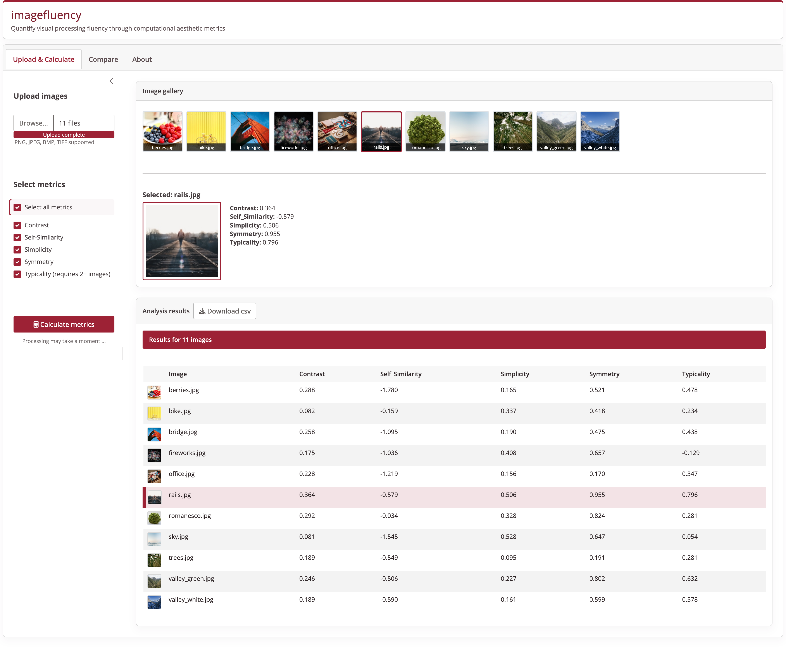

Overview
imagefluency is an R package for image fluency scores. The package allows to get scores for several basic aesthetic principles that facilitate fluent cognitive processing of images.
The main functions are:
-
img_contrast()to get the visual contrast of an image. -
img_complexity()to get the visual complexity of an image (equals 1 minus image simplicity) -
img_self_similarity()to get the visual self-similarity of an image -
img_simplicity()function to get the visual simplicity of an image (equals 1 minus image complexity). -
img_symmetry()to get the vertical and horizontal symmetry of an image. -
img_typicality()to get the visual typicality of a list of images relative to each other
Other helpful functions are:
-
img_read()wrapper function to read images into R usingread.bitmap()from the readbitmap package -
rgb2gray()convert images from RGB into grayscale (might speed up computation) -
run_imagefluency()to launch a Shiny app locally on your computer for an interactive demo of the main functions
The main author is Stefan Mayer.
Interactive Dashboard
There is an interactive dashboard available to analyze images without writing code (see screenshot below). The dashboard supports multi-image uploads, side-by-side comparison, and CSV export.

You can run the dashboard locally with imagefluency::run_imagefluency() once the package is installed, or try it out online here.
Installation
You can install the current stable version from CRAN.
install.packages('imagefluency')To download the latest development version from Github use the install_github function of the remotes package.
# install remotes if necessary
if (!require('remotes')) install.packages('remotes')
# install imagefluency from github
remotes::install_github('stm/imagefluency')Optionally, if you have rmarkdown installed, you can also have your system build the the vignettes when downloading from GitHub.
# install from github with vignettes (needs rmarkdown installed)
remotes::install_github('stm/imagefluency', build_vignettes = TRUE)Use the following link to report bugs/issues: https://github.com/stm/imagefluency/issues
Example usage
# visual contrast
#
# example image file (from package): bike.jpg
bike_location <- system.file('example_images', 'bike.jpg', package = 'imagefluency')
# read image from file
bike <- img_read(bike_location)
# get contrast
img_contrast(bike)
# visual symmetry
#
# read image
rails <- img_read(system.file('example_images', 'rails.jpg', package = 'imagefluency'))
# get only vertical symmetry
img_symmetry(rails, horizontal = FALSE)Documentation
See the getting started vignette for a detailed introduction and the reference page for details on each function.
If you are analyzing a larger number of images, make sure to read the tutorial on how to analyze multiple images at once.
Citation
To cite imagefluency in publications use:
Mayer, S. (2026). imagefluency: Image Statistics Based on Processing Fluency. R package version 1.0.0. doi: 10.32614/CRAN.package.imagefluency
A BibTeX entry is:
@software{,
author = {Stefan Mayer},
title = {imagefluency: Image Statistics Based on Processing Fluency},
year = 2026,
version = {1.0.0},
doi = {10.32614/CRAN.package.imagefluency},
url = {https://imagefluency.com}
}Dependencies
The img_complexity function relies on the packages R.utils and magick. The img_self_similarity function relies on the packages OpenImageR, pracma, and quadprog. The img_read function relies on the readbitmap package. The run_imagefluency shiny app depends on shiny and uses bslib when available, with a fallback UI otherwise.
Further references
To learn more about the different image fluency metrics, see the following publications:
Mayer, S. & Landwehr, J, R. (2018). Quantifying Visual Aesthetics Based on Processing Fluency Theory: Four Algorithmic Measures for Antecedents of Aesthetic Preferences. Psychology of Aesthetics, Creativity, and the Arts, 12(4), 399–431. doi: 10.1037/aca0000187
Mayer, S. & Landwehr, J. R. (2018). Objective measures of design typicality. Design Studies, 54, 146–161. doi: 10.1016/j.destud.2017.09.004
Code of Conduct
Please note that this project is released with a Contributor Code of Conduct. By contributing to this project, you agree to abide by its terms.